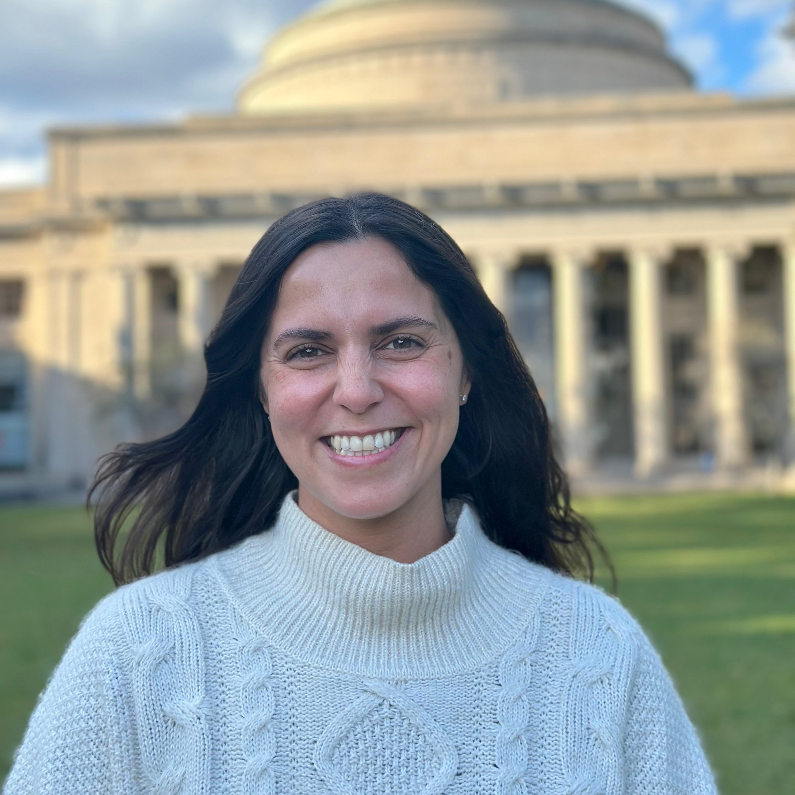
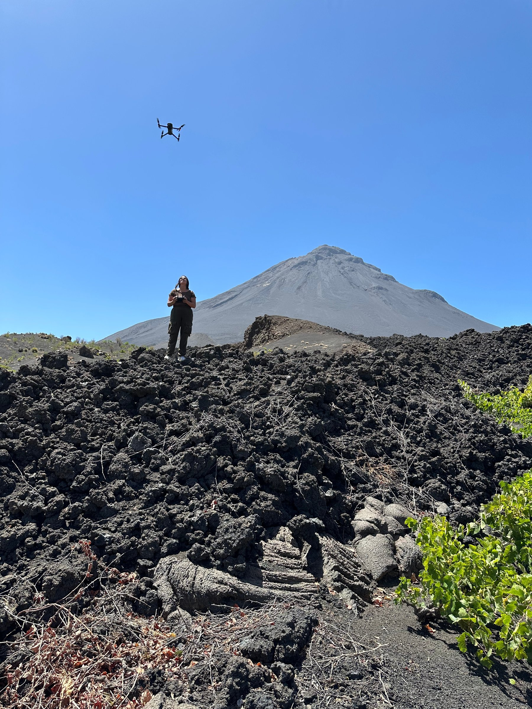

Gaia Stucky de Quay
Principal Investigator
Hi, I'm Gaia (she/her). I'm an Assistant Professor at the Department of Earth, Atmospheric and Planetary Sciences (EAPS) at MIT. Born in Brazil, with Spanish citizenship, and raised in Portugal, I feel right at home in the warm, tropical climate of Boston. Before I ended up here, I obtained my PhD from Imperial College London (with a UChicago internship), and an MSci from University College London where I first fell in love with Earth and Planetary Sciences. Following that, I completed postdocs at UT Austin and my Assistant Professorship at MIT in 2023 and I am looking forward to getting my new group and lab up and running. In general, I'm interested in why landscapes look the way they do. I've looked at channels buried below the seabed, canyons in Iceland, and lakes on Mars -- but I'm always looking for new places to explore! My weak spot is a waterfall, how can you not love them? Outside of work, I love tennis, triathlons, art, reading, and so many other things that I can't fit here. Check out the amazing members of our group below :)
